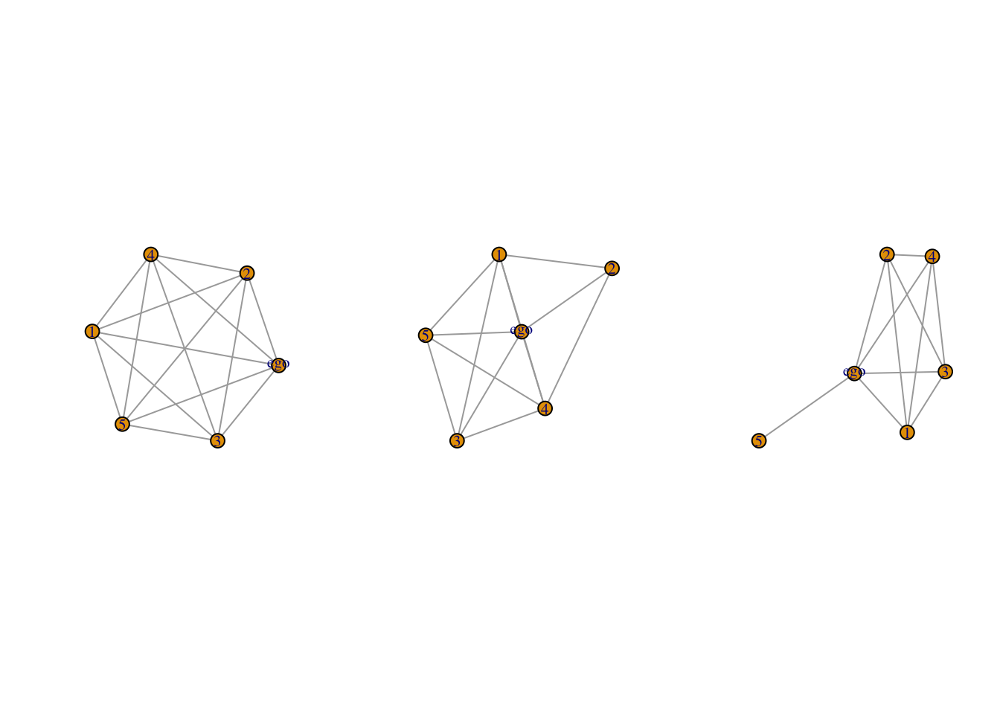
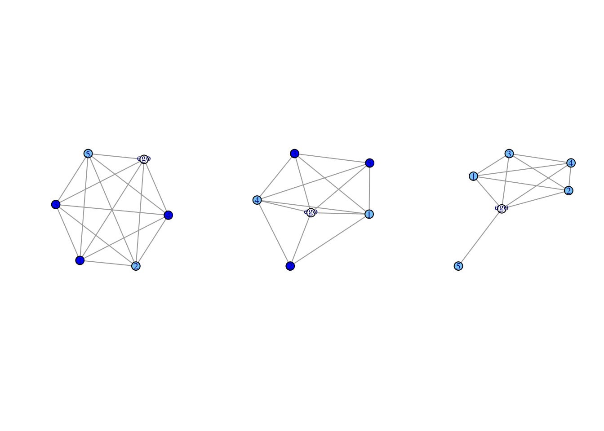

# a file with the ego attributes
url1 <- "https://github.com/JeffreyAlanSmith/Integrated_Network_Science/raw/master/data/gss1985_ego_dat.csv"
ego_dat <- read.csv(file = url1, stringsAsFactors = F) W4. Ego Network Data
Ego Network Data
Cover the basics of ego network data, utilizing the egor package
Construct and visualize ego networks
Focus on substantive questions related to homophily
Working with Ego Network Data
Ego network data are based on a sample of individuals and are commonly used in the social sciences.
Each respondent (ego) reports on the people (alters) they are connected to, providing the local network around the focal respondent.
Ego network data offer only pieces of the whole network
Working with Ego Network Data
Ego network data can be structured in a number of ways but will generally have 4 kinds of information:
1, demographic, behavioral, etc. information on the egos
2, demographic, behavioral, etc. information on the named alters
3, information about the relationship between ego and alter
4, information about the relationships between the alters.
Working with Ego Network Data
Work with ego network data from the GSS(General Social Survey)
a file with the ego attributes
a file with the alter(other) attributes
a file with the alter-alter ties
Load Dataset for Ego Attribute
First 10 rows of the ego data frame
# CASEID : unique ID for each respondent
# NUMGIVEN : the number of alters named
ego_dat[1:10, c("CASEID", "AGE", "EDUC", "RACE", "SEX", "HAPPY", "NUMGIVEN")] CASEID AGE EDUC RACE SEX HAPPY NUMGIVEN
1 19850001 33 16 white male 2 6
2 19850002 49 19 white male 2 6
3 19850003 23 16 white female 2 5
4 19850004 26 20 white female 2 5
5 19850005 24 17 white female 2 5
6 19850006 45 17 white male 2 4
7 19850007 44 18 white female 2 6
8 19850008 56 12 white female 2 5
9 19850009 85 7 white female 2 2
10 19850010 65 12 white female 2 2Load Dataset for Ego Attribute
# check if there is empty values
na_yn <-!is.na(ego_dat$NUMGIVEN)
# exclude the emply values
ego_dat <- ego_dat[na_yn, ]Load Dataset for Alter Attribute
url2 <- "https://github.com/JeffreyAlanSmith/Integrated_Network_Science/raw/master/data/gss1985_alter_dat.csv"
alter_dat <- read.csv(file = url2, stringsAsFactors = F)Load Dataset for Alter Attribute
# each row corresponds to a different named alter
# Each alter is denoted by an ALTERID (CASEID : ALTERID = 1:N)
# KIN : 1(True) if ego is relatives with that alter
# respondent 1 (CASEID = 19850001) names 5 alters. The first alter (ALTERID = 1) is 32, has 18 years of education, and is not kin to ego.
alter_dat[1:10, c("CASEID", "ALTERID", "AGE", "EDUC", "RACE", "SEX", "KIN")] CASEID ALTERID AGE EDUC RACE SEX KIN
1 19850001 1 32 18 white male 0
2 19850001 2 29 16 white female 1
3 19850001 3 32 18 white male 0
4 19850001 4 35 16 white male 1
5 19850001 5 29 13 white female 0
6 19850002 1 42 12 white female 1
7 19850002 2 44 18 white male 0
8 19850002 3 45 16 white male 0
9 19850002 4 40 12 white female 0
10 19850002 5 50 18 white male 0Load Dataset for Alter-Alter Tie
url3 <- "https://github.com/JeffreyAlanSmith/Integrated_Network_Science/raw/master/data/gss1985_alteralter_dat.csv"
alteralter_dat <- read.csv(file = url3)Load Dataset for Alter-Alter Tie
- the ties between the named alters
# `CASEID` : relevant ego
# `ALTER1` : first alter in the dyad
# `ALTER2` : second alter in the dyad
# `Weight` : nature of the relationship (1 : alters know each other, 2: especially close)
alteralter_dat[1:10, ] CASEID ALTER1 ALTER2 WEIGHT
1 19850001 1 2 2
2 19850001 1 3 1
3 19850001 1 4 1
4 19850001 1 5 1
5 19850001 2 3 2
6 19850001 2 4 2
7 19850001 2 5 2
8 19850001 3 4 1
9 19850001 3 5 1
10 19850001 4 5 1Let’s make Ego Network
- The first challenge in analyzing ego network data is that we must transform traditional survey data into something that has the structure of a network, so that we can then utilize packages like igraph and sna.
- Our survey data will not look like traditional network inputs (matrices, edgelists, etc.) and each survey is likely to be different, complicating the task of putting together the ego networks.
- Luckily, the egor package has made the task of constructing ego networks from survey data much easier. We will utilize the basic functionality of the egor package throughout the tutorial. Let’s go ahead and load the package.
# load a package for constructing ego network
library(egor)Let’s make Ego Network
- The basic idea is to first construct an egor object from the survey data.
# The function we will use to construct the egor object is `egor()`. The `egor()` function assumes that you are inputting the data using three separate files.
egonetlist <- egor(alters = alter_dat, # alter attributes data frame
egos = ego_dat, # ego attributes data frame
aaties = alteralter_dat, # alter-alter tie data frame
alter_design = list(max = 5), # list of arguments to specify nomination information from survey
# list of variable names corresponding to key columns
ID.vars = list(ego = "CASEID", alter ="ALTERID",
source = "ALTER1", target = "ALTER2")
) Let’s make Ego Network
egonetlist# EGO data (active): 1,531 × 13
.egoID AGE EDUC RACE SEX RELIG AGE_CATEGORICAL EDUC_CATEGORICAL NUMGIVEN
* <int> <int> <int> <chr> <chr> <chr> <chr> <chr> <int>
1 1.99e7 33 16 white male jewi… 30s College 6
2 1.99e7 49 19 white male cath… 40s Post Graduate 6
3 1.99e7 23 16 white fema… jewi… 20s College 5
4 1.99e7 26 20 white fema… jewi… 20s Post Graduate 5
5 1.99e7 24 17 white fema… cath… 20s Post Graduate 5
# ℹ 1,526 more rows
# ℹ 4 more variables: HAPPY <int>, HEALTH <int>, PARTYID <int>, WTSSALL <dbl>
# ALTER data: 4,483 × 12
.altID .egoID AGE EDUC RACE SEX RELIG AGE_CATEGORICAL EDUC_CATEGORICAL
* <int> <int> <int> <dbl> <chr> <chr> <chr> <chr> <chr>
1 1 19850001 32 18 white male jewi… 30s Post Graduate
2 2 19850001 29 16 white fema… prot… 20s College
3 3 19850001 32 18 white male jewi… 30s Post Graduate
# ℹ 4,480 more rows
# ℹ 3 more variables: TALKTO <int>, SPOUSE <int>, KIN <int>
# AATIE data: 4,880 × 4
.egoID .srcID .tgtID WEIGHT
* <int> <int> <int> <int>
1 19850001 1 2 2
2 19850001 1 3 1
3 19850001 1 4 1
# ℹ 4,877 more rowsLet’s make Ego Network
names(egonetlist) [1] "ego" "alter" "aatie"Calculate Summary Statistics
- We will begin with density, showing the proportion of alter-alter ties that exist in each ego network
# use `ego_density()` function
dens <- ego_density(egonetlist)Calculate Summary Statistics
head(dens)# A tibble: 6 × 2
.egoID density
<int> <dbl>
1 19850001 1
2 19850002 0.8
3 19850003 0.6
4 19850004 0.6
5 19850005 1
6 19850006 0.667Calculate Summary Statistics
The density scores are stored in the object as density. For example, respondent 1 (19850001) has 5 alters and all 10 possible ties exist (density = 1), while respondent 2 (1950002) has 5 alters but only 8 ties exist (density = .8). To check:
alteralter_dat[alteralter_dat$CASEID == 19850001, ] CASEID ALTER1 ALTER2 WEIGHT
1 19850001 1 2 2
2 19850001 1 3 1
3 19850001 1 4 1
4 19850001 1 5 1
5 19850001 2 3 2
6 19850001 2 4 2
7 19850001 2 5 2
8 19850001 3 4 1
9 19850001 3 5 1
10 19850001 4 5 1alteralter_dat[alteralter_dat$CASEID == 19850002, ] CASEID ALTER1 ALTER2 WEIGHT
11 19850002 1 2 1
12 19850002 1 3 1
13 19850002 1 4 2
14 19850002 1 5 2
15 19850002 2 4 2
16 19850002 3 4 2
17 19850002 3 5 1
18 19850002 4 5 2Plotting Ego Networks
- go over how to plot the ego networks using packages like igraph
library(igraph)Plotting Ego Networks
- convert the egor object to igraph objects.
igraph_nets <- as_igraph(egonetlist, include.ego = TRUE)Plotting Ego Networks
igraph_nets[1]$`19850001`
IGRAPH 5654cb9 UN-- 6 15 --
+ attr: .egoID (g/n), name (v/c), AGE (v/n), EDUC (v/n), RACE (v/c),
| SEX (v/c), RELIG (v/c), AGE_CATEGORICAL (v/c), EDUC_CATEGORICAL
| (v/c), TALKTO (v/n), SPOUSE (v/n), KIN (v/n), WEIGHT (e/n)
+ edges from 5654cb9 (vertex names):
[1] 1--2 1--3 1--4 1--5 2--3 2--4 2--5 3--4 3--5 4--5
[11] 1--ego 2--ego 3--ego 4--ego 5--egoPlotting Ego Networks
Now, let’s take a look at the first three ego networks.
igraph_nets[1:3] $`19850001`
IGRAPH 5654cb9 UN-- 6 15 --
+ attr: .egoID (g/n), name (v/c), AGE (v/n), EDUC (v/n), RACE (v/c),
| SEX (v/c), RELIG (v/c), AGE_CATEGORICAL (v/c), EDUC_CATEGORICAL
| (v/c), TALKTO (v/n), SPOUSE (v/n), KIN (v/n), WEIGHT (e/n)
+ edges from 5654cb9 (vertex names):
[1] 1--2 1--3 1--4 1--5 2--3 2--4 2--5 3--4 3--5 4--5
[11] 1--ego 2--ego 3--ego 4--ego 5--ego
$`19850002`
IGRAPH d85d6b5 UN-- 6 13 --
+ attr: .egoID (g/n), name (v/c), AGE (v/n), EDUC (v/n), RACE (v/c),
| SEX (v/c), RELIG (v/c), AGE_CATEGORICAL (v/c), EDUC_CATEGORICAL
| (v/c), TALKTO (v/n), SPOUSE (v/n), KIN (v/n), WEIGHT (e/n)
+ edges from d85d6b5 (vertex names):
[1] 1--2 1--3 1--4 1--5 2--4 3--4 3--5 4--5 1--ego 2--ego
[11] 3--ego 4--ego 5--ego
$`19850003`
IGRAPH 2e5e5b5 UN-- 6 11 --
+ attr: .egoID (g/n), name (v/c), AGE (v/n), EDUC (v/n), RACE (v/c),
| SEX (v/c), RELIG (v/c), AGE_CATEGORICAL (v/c), EDUC_CATEGORICAL
| (v/c), TALKTO (v/n), SPOUSE (v/n), KIN (v/n), WEIGHT (e/n)
+ edges from 2e5e5b5 (vertex names):
[1] 1--2 1--3 1--4 2--3 2--4 3--4 1--ego 2--ego 3--ego 4--ego
[11] 5--egoPlotting Ego Networks
Now, let’s plot a couple of example networks, focusing on the first 3 ego networks.
# set 1 row, 3 column grid for visualization layout
par(mfrow = c(1, 3))
# draw graphs in igraph_nets variable
purrr::walk(igraph_nets[1:3], plot)
Plotting Ego Networks
- Let’s color the nodes based on gender
- so we can get a sense of the level of gender homogeneity in these ego networks
# somewhat more difficult task than with a single network
# defind a function to set the color for each network
plotfunc_colorgender <- function(nets){
# Arguments:
# nets: ego network of interest
# extracting the attribute from the ego network:
cols <- vertex_attr(nets, "SEX")
# now we use an ifelse statement to set color,
# light sky blue if gender equals female, blue otherwise:
cols <- ifelse(cols == "female", "lightskyblue", "blue")
# plotting ego network with nodes colored based on gender:
plot(nets, vertex.color = cols)
}Plotting Ego Networks
- Now let’s run
plotfunc_colorgender()over the first three ego networks.
# third ego network is homogenous in terms of gender
# the first two are quite heterogeneous
# first ego network is complete
par(mfrow = c(1, 3))
purrr::walk(igraph_nets[1:3], plotfunc_colorgender)
Triadic Processes
- We now move to more complex micro processes involving three nodes. Adding a third node adds a number of possibilities that did not exist with only two nodes. For example, there is now the possibility that one node can play the other two off each other for some gain or benefit. There is also the possibility that the relationship between two nodes (A-B) is strained because of the relationship to the third node (A likes C but B does not). The question is what kind of rules of interaction do we see in our friendship and advice networks. We also want to know if the triadic rules for friendship are different (or similar) to the triadic rules for advice. We first discuss the triad census before moving to transitivity.
Triadic Processes
- work primarily with the sna package [@sna], so let’s start by loading that package.
library(sna)Triadic Processes
- We will now do the same thing for the friendship network. The tie information can be read in as:
url1 <- "https://github.com/JeffreyAlanSmith/Integrated_Network_Science/raw/master/data/krackhardt_advice.csv"
url2 <- "https://github.com/JeffreyAlanSmith/Integrated_Network_Science/raw/master/data/krackhardt_attributes.csv"
url3 <- "https://github.com/JeffreyAlanSmith/Integrated_Network_Science/raw/master/data/krackhardt_friendship.csv"
advice_data_frame <- read.csv(file = url1)
attributes <- read.csv(file = url2)
friends_data_frame <- read.csv(file = url3)
advice_edgelist <- advice_data_frame[advice_data_frame$advice_tie == 1, ]Triadic Processes
head(friends_data_frame) ego alter friendship_tie
1 1 1 0
2 1 2 1
3 1 3 0
4 1 4 1
5 1 5 0
6 1 6 0Triadic Processes
head(attributes) ids AGE TENURE LEVEL DEPT
1 1 33 9.333 3 4
2 2 42 19.583 2 4
3 3 40 12.750 3 2
4 4 33 7.500 3 4
5 5 32 3.333 3 2
6 6 59 28.000 3 1Triadic Processes
Now we will subset the data to only include those dyads where a tie exists from i to j.
friends_edgelist <- friends_data_frame[friends_data_frame$friendship_tie == 1, ]Triadic Processes
We now construct the network, as before, using the network() function.
krack_friendship <- network(x = friends_edgelist, directed = T,
vertices = attributes)Triad Census
- The triad census captures the distribution of triads across 16 basic types

Triad Census
- summarize the full distribution of triads using the
triad.census()function - compare the triad counts across the two network relations, to see if the patterns differ for friendship compared to advice
krack_advice <- network(x = advice_edgelist, directed = T,
vertices = attributes) Triad Census
krack_advice Network attributes:
vertices = 21
directed = TRUE
hyper = FALSE
loops = FALSE
multiple = FALSE
bipartite = FALSE
total edges= 190
missing edges= 0
non-missing edges= 190
Vertex attribute names:
AGE DEPT LEVEL TENURE vertex.names
Edge attribute names:
advice_tie Triad Census
# `triad.census()` function outputs the counts in each triad type
triads_friendship <- triad.census(krack_friendship)Triad Census
triads_friendship 003 012 102 021D 021U 021C 111D 111U 030T 030C 201 120D 120U 120C 210 300
[1,] 376 366 143 114 34 35 39 101 23 0 20 16 25 9 23 6Triad Census
And now for advice:
triads_advice <- triad.census(krack_advice) triads_advice 003 012 102 021D 021U 021C 111D 111U 030T 030C 201 120D 120U 120C 210 300
[1,] 74 153 90 160 86 49 59 101 190 2 72 62 78 17 107 30Triad Census
Let’s make a table to make the comparisons easier.
triad_data <- data.frame(advice = t(triads_advice),
friendship = t(triads_friendship))Triad Census
triad_data advice friendship
003 74 376
012 153 366
102 90 143
021D 160 114
021U 86 34
021C 49 35
111D 59 39
111U 101 101
030T 190 23
030C 2 0
201 72 20
120D 62 16
120U 78 25
120C 17 9
210 107 23
300 30 6Note that the total number of triads in each network is the same, making comparisons easier. There are a number of things one could highlight between the two networks, but one striking difference is in the 030T triad, A->B<-C, A->C. The advice network has a much higher proportion of 030T triads than the friendship network, suggestive of an underlying hierarchy of advice less present in the friendship network; where A gives advice to B and C and C gives advice to B and B simply receives advice from others. The underlying hierarchy in this advice relation thus runs: A to C to B, as A influences B and C, C influences only B and B influences no one. Such a pattern of hierarchy does not emerge as clearly in the friendship network. In general, the triads associated with transitive dominance relations (021D, 120D, 021U, 030T, 120U) are more likely to be present in the advice network than the friendship network. Note that we need to be a little careful in pushing that conclusion too far, as the networks have different levels of density (and possibly reciprocity) that may be driving the differences we observe in the triad count. We need to take these baseline differences into account before formally interpreting the triad counts. Here, we will utilize a CUG test to compare the triad census to what we might expect by chance, if people randomly formed ties. We discuss other, more complex, options in future chapters.
We use the same cug.test() function as we used above when looking at reciprocity. The main difference is that here we condition the random networks in a different way. In this case we will condition on the dyad census, to see how the counts of the triad census differ above what we expect from a network of the same size, density and dyadic tendencies (i.e., same rate of reciprocity). Our particular question is if different specific triad types show up more (or less) than we expect in a random network, conditioned on those features. To facilitate this, we will first write a function to make it easier to specify the test statistic of interest, here the counts of specific triad types. Our function will take the network of interest, calculate the triad census and output the count of the particular triad of interest. We could also write a similar function to take the weighted sum over a specified set of triads. Here we focus on one triad type at a time.
count_triads_function <- function(dat, triad_names){
# Arguments:
# dat: the network object
# triad_names: the name of the triad type
triads <- triad.census(dat) # calculating the triad census
triads[1, triad_names] # grabbing counts of triad of interest
}Let’s see how this works before we use it in a CUG test. Let’s focus again on 030T, where A gives advice to B and C and C gives advice to B.
count_triads_function(krack_advice, triad_names = c("030T"))030T
190 Now, let’s use our function to count the triad type of interest but this time compare the counts to what we expect by chance, in a random network conditioned on the dyad census. We now use the cug.test() function. The main inputs are the network (here for advice), the desired conditioning of the random network (cmode set to “dyad.census”) and the function of interest, in this case count_triads_function. The input to that function is triad_names, here set to “030T”.
cug_triads_advice <- cug.test(krack_advice,
FUN = count_triads_function,
mode = c("digraph"),
cmode = c("dyad.census"), reps = 1000,
FUN.args = list(triad_names = c("030T"))) cug_triads_advice
Univariate Conditional Uniform Graph Test
Conditioning Method: dyad.census
Graph Type: digraph
Diagonal Used: FALSE
Replications: 1000
Observed Value: 190
Pr(X>=Obs): 0
Pr(X<=Obs): 1 We can see that the total number of 030T triads in the observed network is above what we expect in the random network. In all 1000 random networks, the observed count is above that seen in the randomly generated network (P(X >= Obs) is equal to 0). This means that the tendency for A to give advice to B and C and then C to give advice to B cannot be accounted for based simply on the density of advice relations and expectations of reciprocity. We now do the same analysis for the friendship network.
cug_triads_friendship <- cug.test(krack_friendship,
FUN = count_triads_function,
mode = c("digraph"),
cmode = c("dyad.census"), reps = 1000,
FUN.args = list(triad_names = c("030T")))cug_triads_friendship
Univariate Conditional Uniform Graph Test
Conditioning Method: dyad.census
Graph Type: digraph
Diagonal Used: FALSE
Replications: 1000
Observed Value: 23
Pr(X>=Obs): 0.136
Pr(X<=Obs): 0.914 The story is different for friendship. Here we see that in many iterations the observed value (the count of 030T) is not above that expected in a random network of that size, density and dyad census. Using traditional statistical cutoffs, we cannot be certain that there is a difference between the observed and random expectations. This suggests that the tendency for A to be friends with B and C and C to be friends with B is not particularly strong in the friendship network, at least not above what could have arisen if people randomly formed friendships (conditioned on the density of the network and the reciprocity rate). Let’s take a closer look at the observed values and the values expected under the randomly generated networks.
cug_triads_friendship$obs.stat030T
23 summary(cug_triads_friendship$rep.stat) Min. 1st Qu. Median Mean 3rd Qu. Max.
8.00 15.00 18.00 18.27 21.00 31.00 On average, the expected count in the random network is 18.27, close to that observed in the true network (23). What if we had considered a different triad type in our friendship network? For example, let’s consider 120U (A->B<-C, A<->C). In this case A and C have a reciprocated friendship. They also both nominate B who does not nominate them back. There are asymmetries in such a triad, but from a balance perspective this may not be problematic. A and C are both positively linked and they have positive sentiments towards B. There is thus agreement about a third party (B) from the point of view of A and C, even if B does not consider them friends in return. Let’s do a CUG test on the count of 120U on the friendship network:
cug_triads_friendship2 <- cug.test(krack_friendship,
FUN = count_triads_function,
mode = c("digraph"),
cmode = c("dyad.census"), reps = 1000,
FUN.args = list(triad_names = c("120U")))cug_triads_friendship2
Univariate Conditional Uniform Graph Test
Conditioning Method: dyad.census
Graph Type: digraph
Diagonal Used: FALSE
Replications: 1000
Observed Value: 25
Pr(X>=Obs): 0
Pr(X<=Obs): 1 In this case, we can see that the observed count (25) is above that expected by chance, and this is the case in all 1000 randomly generated networks. This suggests that a triad based on balanced relations, even if not completely mutual, is observed at comparatively high rates in the friendship network.
Overall, it would appear that the advice network is built around dominance type relations in a way that the friendship network is not. Individuals give advice in a way that follows patterns of status; where, for example, A gives advice ‘down the line’ to B and C. In contrast, the friendship network, at least in our short analysis, is consistent with balancing relations, where if two nodes are strong friends, they will tend to agree (in terms of liking or not liking) third party nodes, even if that third party does not return the friendship. This was not captured very well in the dyadic analysis, where the reciprocity rates were pretty similar in the two networks.
To explore these ideas more carefully, a researcher may want to look at all triad types for each network. As part of this book, we have written an additional function that will automatically do a CUG test for all triad types at once (rather than a single example, as above) and then output a summary table of the results. Let’s read in the function:
source("https://github.com/JeffreyAlanSmith/Integrated_Network_Science/raw/master/R/CUGtest_alltriads.R")The function is called CUGtest_alltriads(). The arguments are dat, the network of interest (assuming it is in the network format), mode, cmode and reps, all directly analogous to cug.test. And now we will use the function on our friendship network.
CUG_test_table <- CUGtest_alltriads(dat = krack_friendship,
mode = "digraph",
cmode = "dyad.census", reps = 1000)CUG_test_table triads obs mean_random prop_random_lte_obs
1 003 376 319.680 1.000
2 012 366 417.224 0.001
3 102 143 171.342 0.004
4 021D 114 43.654 1.000
5 021U 34 44.248 0.044
6 021C 35 88.237 0.000
7 111D 39 73.801 0.000
8 111U 101 74.030 1.000
9 030T 23 18.132 0.917
10 030C 0 6.064 0.004
11 201 20 28.858 0.034
12 120D 16 7.806 0.996
13 120U 25 7.779 1.000
14 120C 9 15.360 0.047
15 210 23 12.189 0.999
16 300 6 1.596 0.999The outputted table has 4 columns. The first column is the triad type. The second column is the observed count in the network of interest. The third column is the mean count seen in the random networks (under the desired conditioning). The fourth column is the proportion of times where the value from the random network is less than or equal to the value in the observed network. We can use these results to explore which triads are found in higher or lower levels than what we expect by chance.